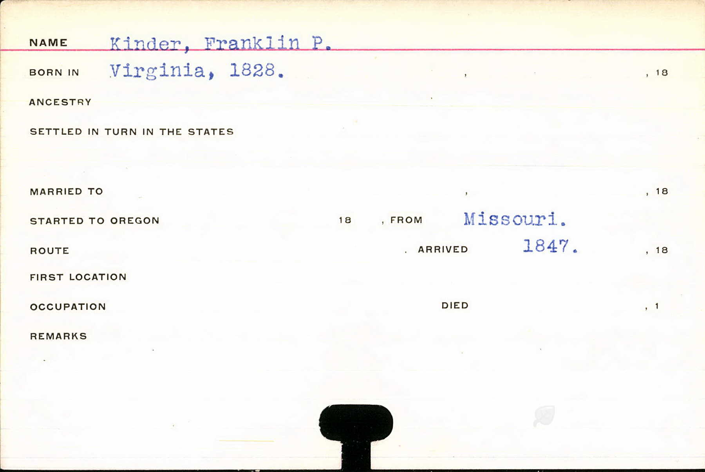
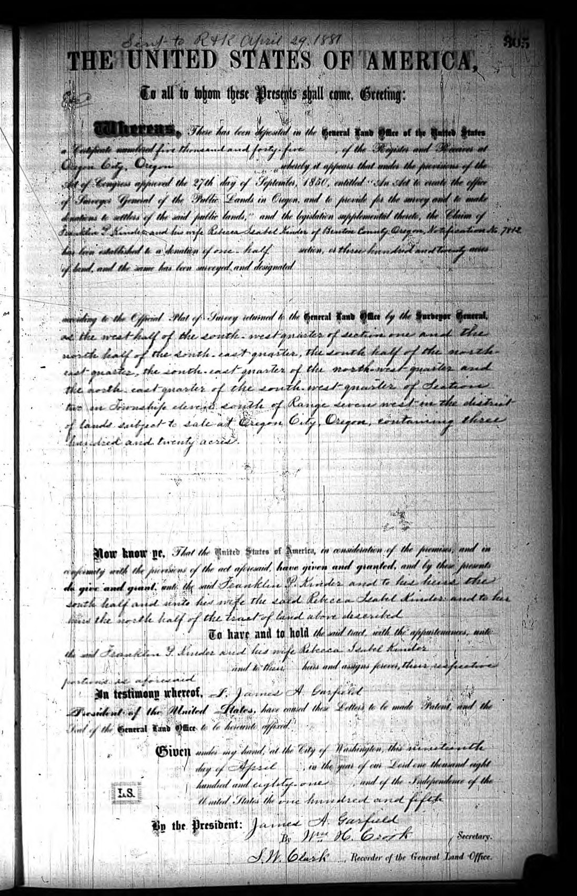

<meta charset="utf-8">
<meta name="viewport" content="width=device-width, initial-scale=1">
<meta name="robots" content="noindex">
<title>The Kinder Side: Virginia to the Oregon Trail</title>
<link rel="stylesheet" href="style.css">

<nav>
  <a href="index.html">Home</a>
  <a class="here" href="kinder.html">Kinder side</a>
  <a href="deye.html">Deye side</a>
</nav>

<main>
<h1>The Kinder Side</h1>
<p class="sub">Alan's father's people. Three families of Oregon Trail pioneers who all crossed the plains in the 1850s and met up in the wheat country of eastern Washington. The oldest names run back to a German settler on the Virginia frontier.</p>

<h2>The Gold Rush boy who came back for a wife</h2>
<p>The man who starts this story is <strong>Franklin Peter Kinder</strong>, born <strong>April 26, 1829, in Wythe County, Virginia</strong>, up in the mountains near a village called Rural Retreat <span class="badge proven">Proven</span>. For years the family story said Franklin came to Oregon in 1847, as a single young man on an early wagon train. That's a great line, and it's how his name got onto the old Oregon pioneer rolls, but the honest records tell a better and messier story, and it's worth getting right.</p>

<p>What actually seems to have happened: Franklin left Virginia and headed for the <strong>California Gold Rush</strong>, and the record places him in California by 1850. Then he did something a lot of young miners did once they had a stake, he went back east to find a wife. He married <strong>Rebecca Isabell Evans in Missouri in 1851</strong>, and the next year, <strong>1852</strong>, the two of them crossed the country together over the Oregon Trail <span class="badge probable">Probable</span>. The woman who kept the old pioneer index even flagged this herself: Franklin shows up on both the 1847 and the 1852 lists, with a note that he was "in California 1850, evidently returned east and married and came again 1852." So the clean "arrived 1847" tagline is <span class="badge lore">family story</span>; the documented arrival is the 1852 crossing, with a new bride in the wagon.</p>

<figure>
  
  <figcaption>Franklin Kinder's name on the Oregon pioneer index (Stephenie Flora's oregonpioneers.com). His entry appears on both the 1847 and 1852 pages, with the compiler's own note about the Gold Rush detour and the 1852 arrival with his wife. It's the reason the "1847" story stuck, and also the reason we can correct it.</figcaption>
</figure>

<h2>Free land in the Coast Range</h2>
<p>Franklin and Rebecca arrived at exactly the right moment to get something almost unimaginable today: <strong>free land, from the federal government, just for showing up and farming it</strong>. The <strong>Oregon Donation Land Claim Act of 1850</strong> handed a married couple who settled in Oregon a full section's worth of ground between them, no purchase price. Franklin and Rebecca claimed theirs in <strong>Benton County, Oregon</strong>, in the Coast Range foothills west of Corvallis, the Kings Valley country <span class="badge proven">Proven</span>.</p>

<p>This isn't family lore. The actual federal land patent survives, a printed United States government deed with <strong>"Franklin P. Kinder and Rebecca Isabel Kinder"</strong> named on it, claim number 5045 out of the Oregon City land office, granting them their section in Township 11 South, Range 7 West <span class="badge proven">Proven</span>. It splits the ground the old-fashioned way: the south half to Franklin, the north half to Rebecca in her own name. And look at whose name it's issued under, <strong>President James A. Garfield</strong>, signed at Washington on April 19, 1881, just weeks before Garfield was shot and months before he died. It's the single best document on this whole side of the family, the paper that turned a Virginia gold-miner into an Oregon landowner.</p>

<figure>
  
  <figcaption>The United States land patent, issued April 19, 1881: "give and grant unto the said Franklin P. Kinder... and unto his wife the said Rebecca Isabel Kinder... the tract of land above described," three hundred and twenty acres at Oregon City, Oregon, in the name of President James A. Garfield. Bureau of Land Management, General Land Office records. <a href="documents/kinder-1881-oregon-land-patent.pdf">Full-resolution scan.</a></figcaption>
</figure>

<p>Their son <strong>James Buchanan Kinder</strong> was born on that Oregon land on <strong>October 31, 1859</strong>, named, as the date tells you, for the president elected in 1856 <span class="badge proven">Proven</span>.</p>

<h2>Three pioneer families, one wagon road</h2>
<p>Here's the thing most families never realize about themselves: Alan's father's side isn't one pioneer line, it's <strong>three</strong>, and they all rolled west in the same decade.</p>

<p>Rebecca's family, the <strong>Evanses</strong>, were the second. Her father <strong>Thomas H. Evans</strong> was born <strong>February 7, 1808, in Woodford County, Kentucky</strong>, moved to Missouri, and ended his life in Oregon, dying in 1869 at Sublimity, in the Willamette Valley <span class="badge proven">Proven</span>. We know he's Rebecca's father because her own Washington death certificate names him, "Thos Evans," in her son's handwriting. Kentucky to Missouri to Oregon, the classic frontier drift, one county at a time.</p>

<p>The third family came in through James Buchanan Kinder's wife, <strong>Ella Muncy</strong>, and they may be the most colorful of the lot. Ella was born <strong>September 21, 1874, in Roseburg, Oregon</strong> <span class="badge proven">Proven</span>. Her father was <strong>Isaac Newton Muncy</strong>, born in <strong>Arkansas in 1844</strong>, who came to Oregon as a boy in <strong>1852</strong>, grew up to be a <strong>gospel preacher</strong> in the frontier Christian Church, and late in life <strong>served in the Oregon State Legislature, 1909 to 1910</strong> <span class="badge proven">Proven</span>. A preacher-legislator great-great-grandfather is not a bad thing to have on the tree.</p>

<p>So by the time James Buchanan Kinder married Ella Muncy in 1892, two deep Oregon-pioneer streams were joining: the Kinder-and-Evans line that came in 1852, and the Muncy line that came in 1852. Same trail, same decade, different wagons.</p>

<h2>The wheat country</h2>
<p>The Kinders didn't stay in western Oregon. Sometime after the early 1870s the family pulled up and moved north and east, over into the dry, rolling wheat country of <strong>Waitsburg, in Walla Walla County, Washington</strong> <span class="badge probable">Probable</span>. That's where Franklin died in 1889, where Rebecca died in 1912, and where their son James Buchanan Kinder ran a wheat ranch and raised his own family. Four generations of Kinders are buried together in the <strong>IOOF Cemetery at Waitsburg</strong>.</p>

<p>It was a hard place and a hard era. Ella Muncy Kinder died young, on <strong>February 13, 1912</strong>, of what the local paper called "cancer of the bowels following an almost hopeless operation." Her son <strong>Darrell W. Kinder</strong>, Alan's father, was twelve years old and lost his mother <span class="badge proven">Proven</span>. Darrell had been born on the Waitsburg place on <strong>November 17, 1899</strong>.</p>

<h2>Down to Alan</h2>
<p>Darrell grew up, left the wheat ranch, and went west to the coal-and-timber country south of Seattle. In <strong>1923</strong> he married a Walla Walla schoolteacher named <strong>Vera May Deye</strong> (her family is the <a href="deye.html">other side of this site</a>), and in <strong>1925</strong> their son <strong>Alan James Kinder</strong> was born <span class="badge proven">Proven</span>.</p>

<p>And there's a quiet piece of timing worth sitting with. Alan came home from World War II and was discharged in early December 1945. His grandfather and namesake, <strong>James Buchanan Kinder, the boy born on the Oregon land claim in 1859, died at Waitsburg on December 30, 1945</strong>, just a few weeks after Alan got home <span class="badge proven">Proven</span>. The old pioneer's grandson made it back from the war in time, barely, and then the last man who'd been born on the Oregon claim was gone. From a wagon on the Oregon Trail to a sound-ranging crew in Luxembourg, in three generations.</p>

<h2>How far back it goes, honestly</h2>
<p>The documented Kinder male line runs solidly back to <strong>Christian Kinder, born about 1804 in Wythe County, Virginia</strong>, Franklin's father, who later died in Missouri <span class="badge probable">Probable</span> (his fatherhood of Franklin is a strong inference, not yet nailed by a single record). Above him, the trail gets interesting but goes cold on proof. Wythe County's Kinder families descend from a <strong>German immigrant, Peter Kinder, who landed at Philadelphia in 1738</strong> and settled on the Virginia frontier at a creek that still bears his name, Peter's Creek. It's very likely Alan's line ties into that 1738 Palatine German immigrant, but the exact chain from him down to Christian only exists on user-built online trees, not in records, so it stays <span class="badge lore">family story</span> and a research lead, not a fact.</p>

<p>The two grandmother lines reach: the <strong>Evans</strong> line proven to <strong>Thomas H. Evans, born 1808 in Kentucky</strong> (his own parents are an unsourced online guess, and Evans is a common enough name that it's left off here on purpose); the <strong>Muncy</strong> line proven to <strong>Isaac Newton Muncy, born 1844 in Arkansas</strong> (the popular claim tying this Muncy family back to colonial Virginia in the 1600s isn't supported by any record for this Ella, so it's not published here as fact).</p>

<h2>The paper trail</h2>
<ul class="docs">
  <li><a href="documents/kinder-1881-oregon-land-patent.pdf">Franklin &amp; Rebecca Kinder, 1881 Oregon land patent (BLM General Land Office)</a><span class="doc-what">The federal deed embedded above, claim no. 5045, Oregon City land office, 320 acres, issued in the name of President James A. Garfield. The centerpiece document of this whole line. Full-resolution scan.</span></li>
  <li><a href="http://www.oregonpioneers.com/1852_JQ.htm">Oregon pioneer index, 1852: the Franklin Kinder entry</a><span class="doc-what">Names Franklin, wife Rebecca Evans, the Gold Rush detour, and the 1852 arrival. The record that both created and corrects the "1847" story.</span></li>
  <li><a href="https://www.findagrave.com/memorial/38032041/franklin-peter-kinder">Franklin Peter Kinder, 1829-1889, IOOF Cemetery, Waitsburg</a><span class="doc-what">Born Rural Retreat, Wythe County, Virginia. Grave photo and death-index links.</span></li>
  <li><a href="https://www.findagrave.com/memorial/7672548/rebecca_isabell-kinder">Rebecca Isabell (Evans) Kinder, 1835-1912</a><span class="doc-what">Her Washington death certificate is posted on the memorial. It names her father, "Thos Evans," proving the Evans link.</span></li>
  <li><a href="https://www.findagrave.com/memorial/38032042/james-buchanan-kinder">James Buchanan Kinder, 1859-1945</a><span class="doc-what">Alan's grandfather and namesake. Born on the Oregon land claim at Corvallis; died at Waitsburg 25 days after Alan came home from the war.</span></li>
  <li><a href="https://www.findagrave.com/memorial/7547028/ella-kinder">Ella (Muncy) Kinder, 1874-1912</a><span class="doc-what">Born Roseburg, Oregon; died at Walla Walla when her son Darrell was twelve. Carries a transcribed newspaper obituary.</span></li>
  <li><a href="https://www.findagrave.com/memorial/161137028/isaac_newton-muncy">Isaac Newton Muncy, b. 1844 Arkansas</a><span class="doc-what">Ella's father: frontier gospel preacher, to Oregon in 1852, Oregon State Legislature 1909-1910.</span></li>
  <li><a href="https://www.findagrave.com/memorial/28903873/thomas_h-evans">Thomas H. Evans, 1808-1869</a><span class="doc-what">Rebecca's father: Woodford County, Kentucky, to Missouri, to the Willamette Valley of Oregon.</span></li>
  <li><a href="https://www.findagrave.com/memorial/169861029/darrell_w-kinder">Darrell W. Kinder, 1899-1977</a><span class="doc-what">Alan's father. Born on the Waitsburg wheat ranch; buried at Renton, Washington.</span></li>
</ul>

<div class="footer"><p><a href="index.html">Back to the family</a> &middot; <a href="deye.html">On to the Deye side</a></p></div>
</main>
